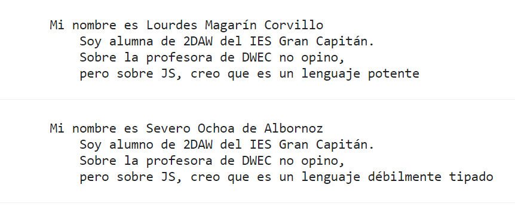

¡Advertencia!
Para poder utilizar este sitio web es necesario tener habilitado el JavaScript.
Examen UD2
En la etiqueta title coloca tu nombre y apellidos al principio
Añade las etiquetas que veas necesarias
Incluye dos ficheros script1.js y script2.js
En las declaraciones usa const en la medida de lo posible
Prohibido el uso del for clásico
Con respecto a los comentarios:
Utiliza de forma correcta los comentarios JSDoc que se adjuntan
Añade los comentarios de línea con las técnicas utilizadas: destructuring, spread, rest, ternario...
En el fichero script1.js
Define las funciones porDefecto y muestraResultado según indica su comentario JS. Utiliza el fichero script1.txt
Declara una variable "nombreApellido1" (en mi caso lourdesMagarin) que sea un objeto literal con las siguientes propiedades referentes a tu persona:
nombre
apellido1
apellido2
mujer
JS, con la opinión sobre el lenguaje. La propiedad JS será un objeto con una única propiedad opinion
Invoca a muestraResultado con la variable "nombreApellido1"
Invoca a muestraResultado sin parámetros
Se adjunta pantallazo de la consola

En el fichero script2.js
Crea dos arrays valoresNullish y valoresFalsy.
valoresNullish: array con los valores nullish
valoresFalsy: array con los valores falsy (menos los nullish, 4 elementos)
Invoca la función creaCopia y pásale ambos arrays como argumentos
La función creaCopia devuelve un nuevo array con los elementos de los dos arrays. Para ello usa los operadores rest y spread
Recorre el nuevo array e indica el tipo de dato que es cada valor. Si no es un valor primitivo indícalo con NO ES PRIMITIVO